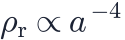
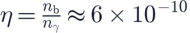

In this lesson you will learn
|
Cooling by expansion
The universe is filled with radiation that has a blackbody spectrum, the kind of light emitted by any object in thermal equilibrium. A blackbody spectrum is completely described by its temperature ; the typical wavelength of its photons is inversely proportional to it (Wien's law):
As the universe expands, every photon wavelength stretches by the scale factor. A stretched blackbody is still a blackbody, just with a lower temperature:
with K today.
Worked example At recombination, , the temperature was K, about half the surface temperature of the Sun. Back then the "microwave" background glowed orange-red. |
The energy density of blackbody radiation grows as the fourth power of the temperature, . Since , this reproduces

from lesson L3.1.Temperature as energy
In the early universe it is more natural to measure temperature as a typical particle energy , where is Boltzmann's constant. Physicists use the electron volt (eV):
Hot enough to create particles When exceeds a particle's rest energy , collisions between photons can create particle–antiparticle pairs. An electron has MeV, so above about K the universe was full of electrons and positrons constantly created and annihilated. As the universe cooled below each threshold, those particles annihilated and disappeared, heating the remaining photons slightly. |
Time and temperature in the radiation era
During the radiation era, the Friedmann equation with and gives a simple rule of thumb:
- At 1 second: about K (1 MeV).
- At 100 seconds: about K.
- At 1 hour: about K.
The exact numbers depend on how many kinds of particles are present, but this estimate is good enough to follow the story.
Thermal equilibrium
In the early universe, particles collided so frequently that they shared energy and stayed in thermal equilibrium. A reaction stays in equilibrium as long as it happens faster than the universe expands, that is, its rate exceeds . When drops below , the reaction effectively stops: the particles decouple or freeze out.
This simple criterion explains neutrino decoupling at about 1 second, the neutron-to-proton ratio in nucleosynthesis, and photon decoupling at recombination.
An ocean of photons
Today the CMB contains about 411 photons per cubic centimetre. By comparison, there is only about one proton per four cubic metres. The baryon-to-photon ratio

has stayed constant since the first seconds, because both numbers dilute as . There are more than a billion photons for every proton or neutron. This tiny number shapes both nucleosynthesis and recombination, as the next lessons show.
Try it: Interactive Cosmic Timeline Find the moment in the Interactive Cosmic Timeline when the typical particle energy kT fell below 1 MeV, the rest energy of an electron–positron pair. |
Try it: Cosmology Calculator Enter large redshifts and watch the CMB temperature: find when the universe was hotter than the surface of the Sun (5 800 K). |
Remember this
|